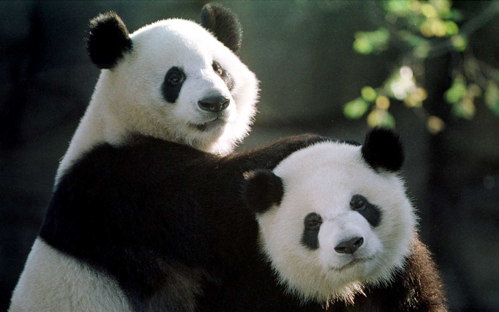

Love Love Panda Desu
The best place for panda lovers

About Pandas
The giant panda (Ailuropoda melanoleuca, literally "black and white cat-foot"; Chinese: 大熊猫; pinyin: dà xióng māo, literally "big bear cat"), also known as panda bear or simply panda, is a bear native to south central China. It is easily recognized by the large, distinctive black patches around its eyes, over the ears, and across its round body. The name "giant panda" is sometimes used to distinguish it from the unrelated red panda. Though it belongs to the order Carnivora, the giant panda's diet is over 99% bamboo. Giant pandas in the wild will occasionally eat other grasses, wild tubers, or even meat in the form of birds, rodents, or carrion. In captivity, they may receive honey, eggs, fish, yams, shrub leaves, oranges, or bananas along with specially prepared food.
